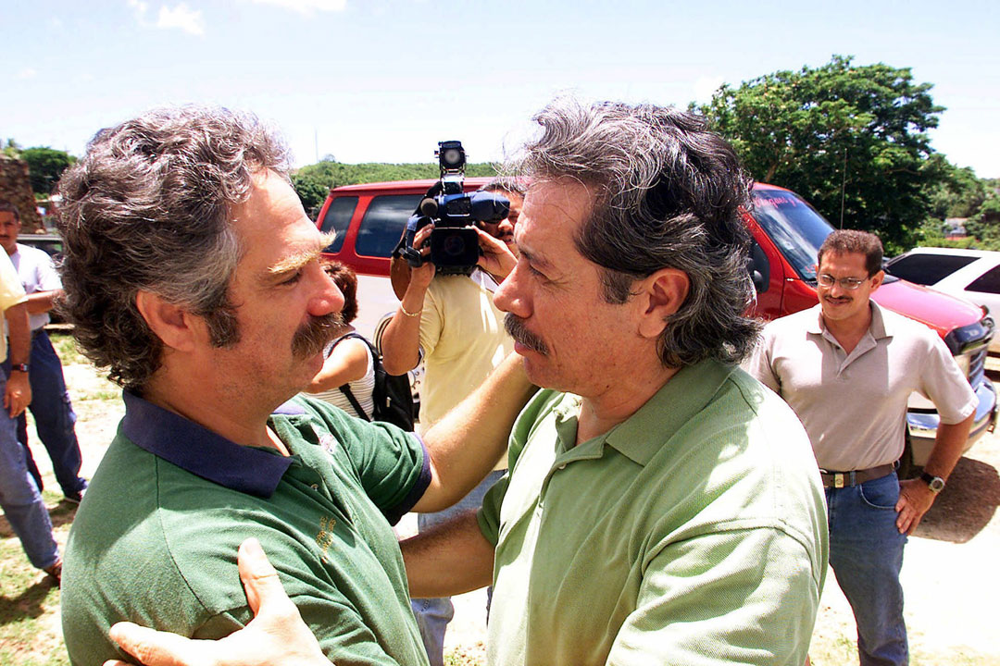

Robert Rabin y Nilda Medina durante una conferencia de prensa sobre el anuncio que el presidente George W. Bush ordenó la salida de la Marina de la isla de Vieques, el 14 de junio de 2001. (Archivo/Jose Jiménez)
El reverendo Jesse Jackson, quien apoyaba a los manifestantes que protestaban la ocupación de Vieques por la Marina, abraza al activista Robert Rabin, durante su visita a la isla de el 23 de junio de 2001.(AP)
El actor Edward James Olmos (derecha) y el activista Robert Rabin (izquierda) luego de servir una sentencia de 20 días por allanar en territorio de territorio de la Marina el 25 de agosto de 2001. (AP)
Robert Radin ahora es el coordinador de Museo Fuerte Conde de Mirasol en Isabel Segunda, Vieques. (Carlos Giusti/ carlos.giusti@gfrmedia)
Fue parte de las reuniones con el abogado Robert Kennedy sobre las labores de limpieza de la Marina en la Isla Nena. (Carlos Giusti/ carlos.giusti@gfrmedia)